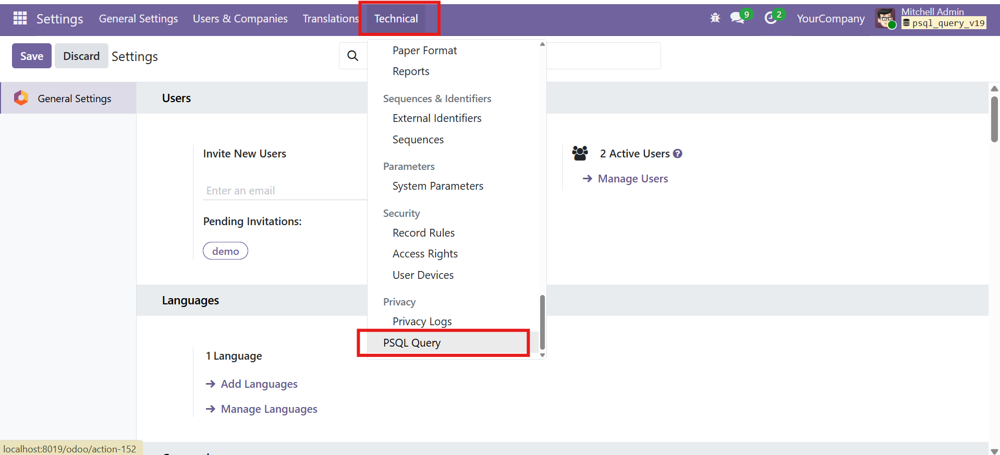
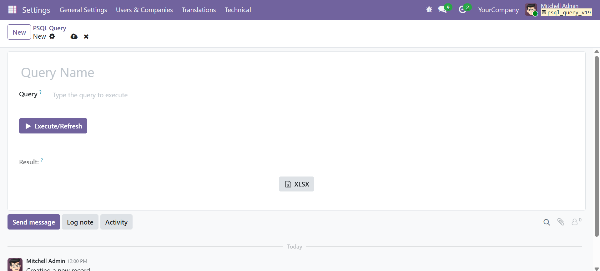
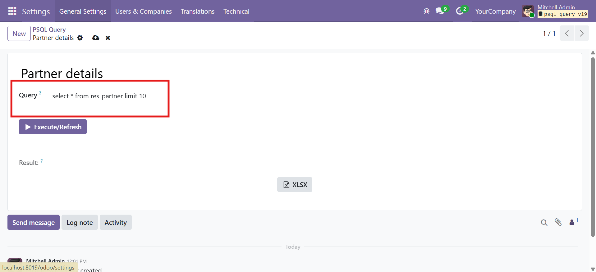
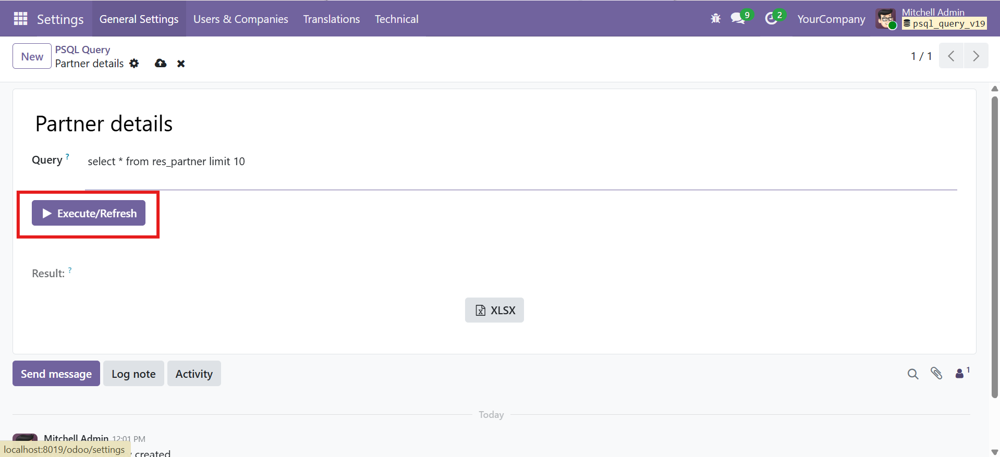
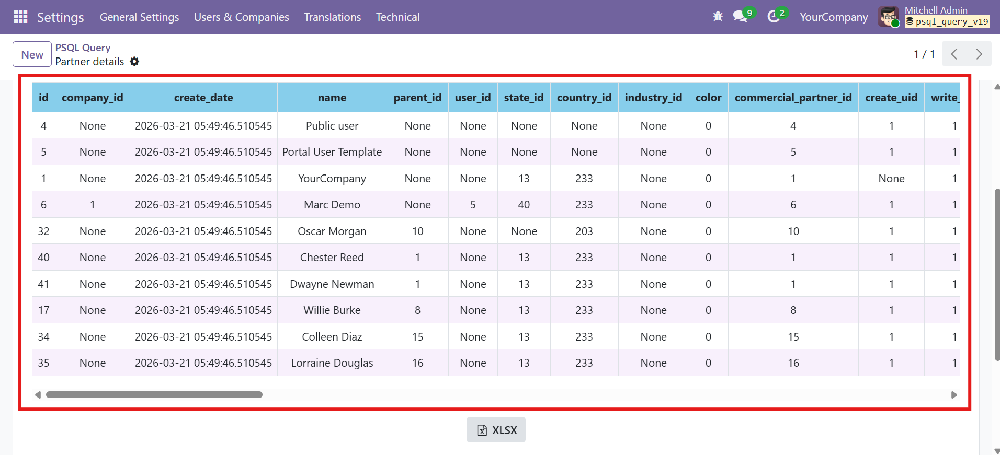
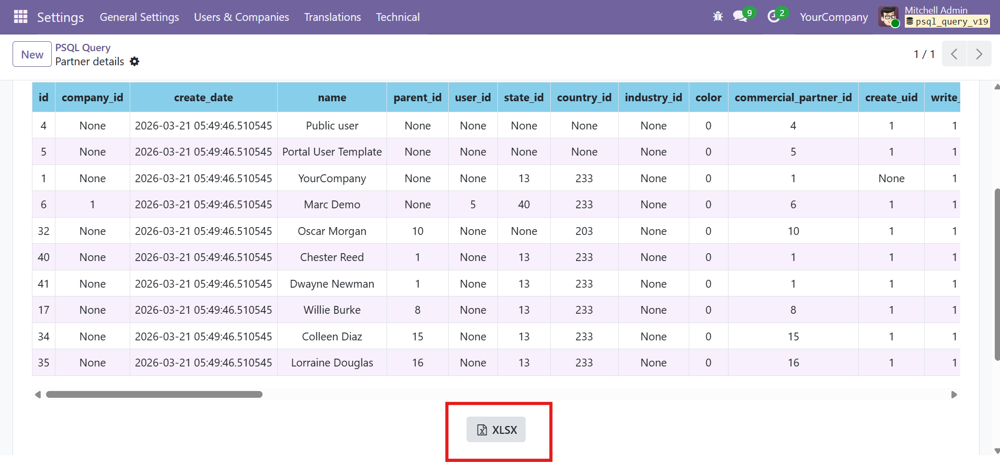
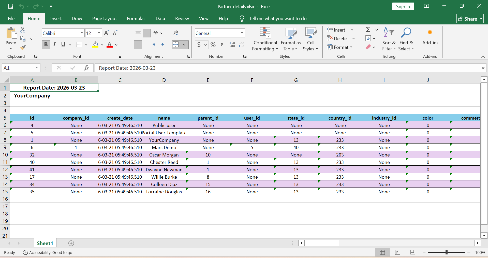
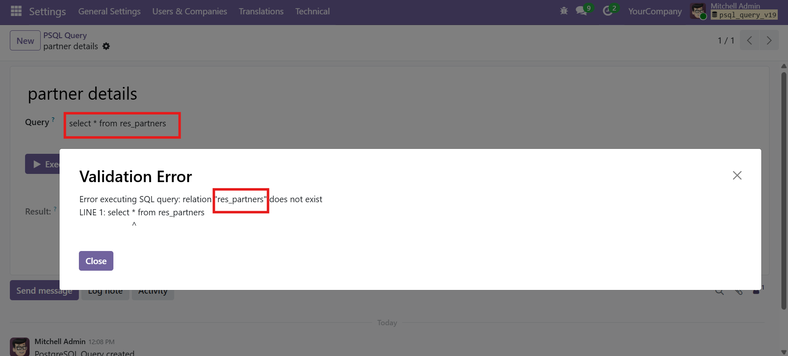

Run PostgreSQL Queries Directly from Odoo
Execute SELECT · Formatted Results · XLSX Download · Error Handling · Zero Config
SDLC PSQL Query Execute is a technical utility module for Odoo that allows system administrators to run PostgreSQL SELECT queries directly from the Odoo user interface. It provides a simple, secure, and convenient way to query database tables without leaving the Odoo backend — complete with formatted HTML result tables and one-click XLSX export.
Whether you need to quickly inspect data, validate records, debug issues, or generate ad-hoc reports, this module gives technical users instant access to raw database results — all within a clean, integrated Odoo interface.
Three essential capabilities for database-level insight from inside Odoo.
Execute SELECT QueriesRun raw PostgreSQL SELECT queries directly from the Odoo backend with a single click. No external tools needed. |
Formatted HTML ResultsView results in a beautifully styled table with sky blue headers, alternating row colors, and scrollable layout. |
One-Click XLSX ExportExport query results to a professionally formatted Excel file with Report Date, Company Name, and styled headers. |
Every feature designed for fast, safe, and convenient database inspection.
Menu Access & NavigationAccessible via Settings > Technical > PSQL Query. Fully integrated into the Odoo backend with no extra setup. |
Query Name & OrganizationLabel and organize saved queries with a dedicated name field for better management and quick re-execution. |
SQL Query InputDedicated text area for writing raw PostgreSQL SELECT statements with full query flexibility and syntax support. |
Execute / RefreshRun or re-run queries instantly with a single click. Results refresh immediately without any page reload. |
Styled Result TableFormatted HTML table with sky blue headers, alternating row colors, and horizontal/vertical scrolling for wide datasets. |
XLSX Export with BrandingExport to Excel with Report Date, Company Name, styled column headers, and alternating row colors for professional output. |
Error Handling & ValidationDescriptive error messages with Validation Error dialogs for invalid queries, SQL syntax errors, or missing tables. Clear feedback so users know exactly what went wrong. |
|
From install to results in under a minute. No configuration required.
1
NavigateGo to Settings > Technical > PSQL Query |
2
Write QueryEnter a name and write your SELECT statement |
3
ExecuteClick Execute/Refresh to run the query instantly |
4
ExportClick XLSX to download formatted Excel report |
Real screens showing every step — from menu access to XLSX export and error handling.

Technical > PSQL Query Menu" style="width:92%;height:auto;display:block;margin:0 auto;border-radius:8px;border:1px solid #cbd5e1;" />Access PSQL Query from Settings > Technical menu

Query form view — enter a Query Name, write your SQL, and click Execute/Refresh

Query entered — example: "select * from res_partner limit 10" ready for execution

Click Execute/Refresh to run the SQL query and fetch results from the database

Formatted HTML results with sky blue headers, alternating row colors, and horizontal scrolling

Click the XLSX button to download query output as a professionally formatted Excel file

XLSX report in Excel — Report Date, Company Name, styled headers, and alternating row colors

Error handling — Validation Error dialog with a descriptive SQL error message
System AdminsInspect database tables, validate records, and debug data issues without leaving Odoo. |
DevelopersTest queries, verify data integrity, and run quick checks during development and debugging. |
ConsultantsGenerate ad-hoc reports and investigate data for clients directly from the Odoo backend. |
Odoo PartnersProvide clients with a safe, integrated tool for database inspection without external access. |
| Install the module — no settings to configure |
| Navigate to Settings > Technical > PSQL Query |
| Create a new record, give it a name, and write your SELECT query |
| Click Execute/Refresh to run the query and view results |
| Click XLSX to download results as a formatted Excel file |
What type of queries can I run?Only SELECT queries are supported. INSERT, UPDATE, DELETE, and DDL statements are blocked for safety. |
Is any configuration needed?No. Works immediately after installation. Just navigate to Settings > Technical > PSQL Query. |
Can I export results to Excel?Yes. Click the XLSX button to download a formatted Excel file with Report Date, Company Name, and styled headers. |
What if my query has an error?A Validation Error dialog shows the exact SQL error message so you can quickly identify and fix the issue. |
Can I save and reuse queries?Yes. Each query is saved as a record with a name. Go back to any saved query, re-execute it, or modify it anytime. |
Which Odoo version is supported?This module is built and tested for Odoo 19. It follows Odoo-native design patterns and workflows. |
We stand behind our module. Get free lifetime bug-fix support with every installation — no hidden charges, no expiry.
Free Bug FixesAny bugs found in the module will be fixed free of charge for the lifetime of your installation. |
Free Version UpdatesReceive future updates and compatibility patches as new Odoo versions are released. |
Dedicated SupportReach our technical team via Email, Phone, or WhatsApp for any questions or assistance. |
| Lifetime free bug-fix support | No hidden charges or renewal fees |
| Quick response from technical team | Compatible with future Odoo updates |
| Multi-channel support (Email, Phone, WhatsApp) | Documentation and setup guidance included |
SDLC Corp provides end-to-end Odoo services for businesses of all sizes.
Odoo CustomizationTailor Odoo modules and workflows to match your exact business requirements. |
Odoo ImplementationComplete end-to-end Odoo setup, configuration, data migration, and go-live support. |
Odoo Support & MaintenanceOngoing technical support, bug fixes, performance tuning, and maintenance plans. |
Odoo IntegrationConnect Odoo with third-party platforms, APIs, payment gateways, and external systems. |
Hire Odoo DeveloperDedicated Odoo developers available for short-term or long-term project engagements. |
Odoo MigrationSeamless migration from older Odoo versions or other ERPs with data integrity and zero downtime. |
If you need help with setup, compatibility, customization, or have any questions, feel free to contact us.
|
|
Phone +1 415-594-0097 |
|
Contact us for:
| Free consultation | Customization and workflow automation |
| Compatibility review | Enterprise and multi-instance planning |
| Pre-sales questions | Priority support and advanced requirements |
| Setup and implementation guidance | |